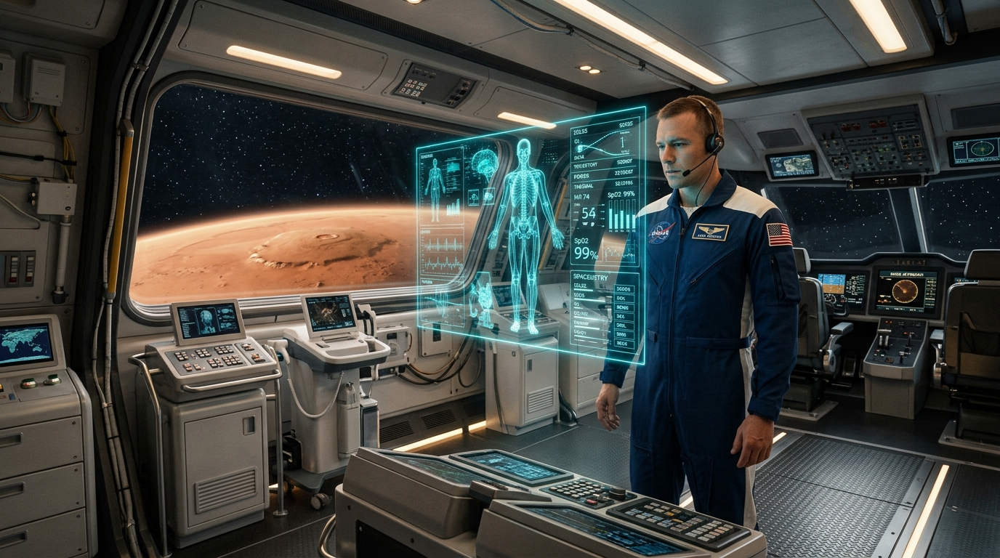
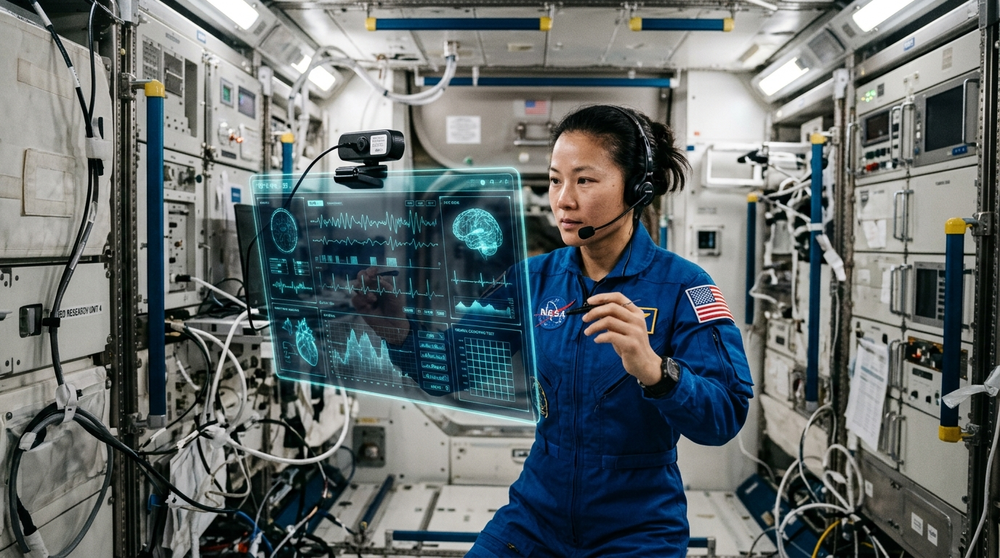
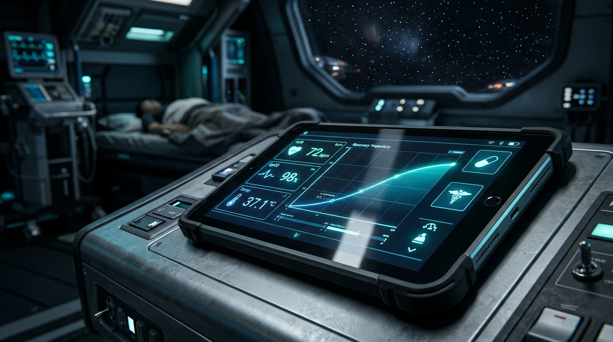
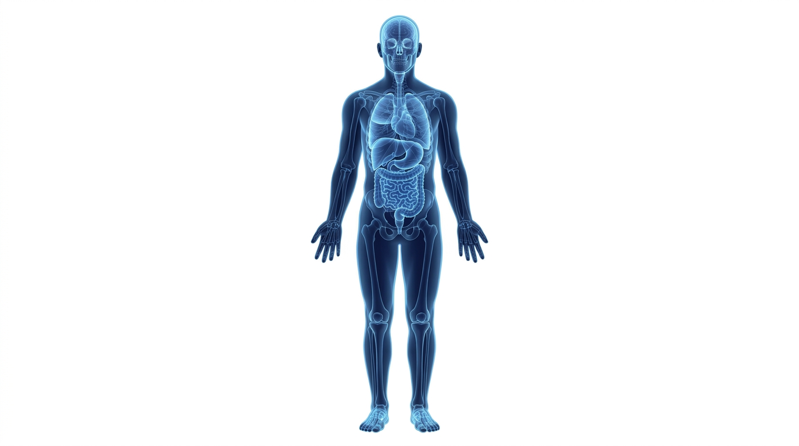

Did you know astronauts wait up to 44 minutes just to send a message to Earth and get a reply?
During Mars expeditions, radio signals take up to 22 minutes each way (44 minutes round-trip). Standard Earth medical software fails in 0g because fluids shift to the head and cabin CO2 mimics common illnesses.
- Body + Spacecraft Fusion: Links crew vitals directly to cabin CO2 and radiation sensors so crews fix an air fan instead of taking the wrong medication.
- 0g & Sex-Adapted Baselines: Calibrates normal ranges for microgravity fluid shifts and female/male physiology.
- For Everyone, Not Just Astronauts: Built for real astronauts, flight surgeons, students, rural clinics, and anyone curious about space health.
How do I navigate the platform?
Use the top navigation bar or the ☰ Menu button anytime to jump between Home, About Us, Mission & Scenarios, Interactive Lab, Self-Diagnosis, and References.
How does the 30-Day Treatment Quiz work?
Inside Interactive Lab → 30-Day Treatment Quiz, choose any space scenario and answer sequential one-choice questions. The graph plots your personal decision curve alongside untreated and optimal curves.
Can I ask questions about any section?
Yes! Click the VitalsZero AI Assistant button in the bottom-right corner anytime for instant explanations in English or Turkish.

01 • MISSION & SCENARIOSExplore Crew & 5 Space Crises
Pick an astronaut avatar, choose a deep-space scenario, and see how every organ reacts on the anatomical map.

02 • INTERACTIVE LAB (3 TOOLS)Test Yourself as an Astronaut
Run webcam pulse & voice scans, test your EVA reaction speed, and plot your 30-day treatment trajectory.

03 • SELF-DIAGNOSIS & RXCustom Symptom & Time Plan
Enter your mission location, days in space, and symptoms to receive a tailored medical prescription & PDF.
Elif Azra Özata & Ali Manas Aydoğmuş • NASA Space Apps Challenge 2026
The Science Behind ARES-MED
01. 44-Min Blackout & 0g Calibration: In zero gravity, ~2 L of fluid shifts headward (SANS, ONSD > 5.8 mm). ARES-MED dynamically adapts baselines by Mission Day (1–500), gravity (0g/0.16g/0.38g), and sex.
02. Spacecraft Coupling: Links crew vitals directly to cabin ppCO2, NASA-STD-3001 radiation limits (600 mSv), and ~1.25%/month bone loss.
03. Interactive Checks & Rx PDF: Combines 4 crew profiles × 5 crises, webcam rPPG & voice stress, NASA PVT EVA testing, a 30-day quiz, and 1-page Prescription PDF + HL7 FHIR export.
Our Advantage: Built for both astronauts and everyone on Earth—100% offline, grounded in NASA OSDR, Twins Study & TRISH HERMES.
ARES-MED Project SWOT Analysis
STRATEGIC EVALUATIONS • Strengths
- 100% offline-first edge execution for 44-minute Mars communication blackouts.
- Designed for everyone—not only astronauts, but also students, space enthusiasts, and remote clinics.
- Grounded in official NASA OSDR, Twins Study, and NASA-STD-3001 benchmarks.
- If-Clause Potential: If paired with live ISS flight hardware, controlled cabin lighting, and clinical certification, it becomes a flight-ready medical copilot.
W • Weaknesses
- Prototype currently uses simulated telemetry rather than live ISS flight hardware.
- Webcam rPPG pulse accuracy depends on cabin lighting conditions.
- Requires formal clinical certification before replacing flight-certified medical kits.
O • Opportunities
- Direct dual-use deployment in rural Earth clinics, submarines, and commercial space stations (Artemis Gateway).
- Turning regulatory rigor into trust: early agency partnerships transform strict aerospace rules into a globally certified standard.
- Human-in-the-loop empowerment: transparent HL7 FHIR & TRISH HERMES outputs support Crew Medical Officers without replacing human judgment.
T • Threats
- Strict aerospace medical regulatory approval timelines.
- Crew over-reliance on automated triage without human medical judgment.
Even when spacecraft systems are completely healthy, zero gravity quietly shifts ~2 liters of blood toward the upper body.
Fluid shifts upward in 0g, gently increasing pressure behind the eyes. Currently within safe limits.
Bone marrow produces white blood cells. Shielding keeps space radiation stress low right now.

Heart pumps slightly less blood volume in 0g, while lungs exchange oxygen and cabin CO2 normally.
Without gravity pushing down on legs, bones slowly lose calcium unless protected by daily ARED resistance exercise.
Resting HR stable • Sleep averaging 7.5h/night.
How it works: Your camera detects tiny light changes in facial blood flow (rPPG) while your mic measures vocal cord micro-tremor (F0 jitter) to estimate stress and fatigue.
Mission Roleplay: You are piloting the Mars lander and monitoring an exterior spacewalk (EVA). Tap the panel the instant the hazard signal turns green!
• < 260 ms: Elite EVA / Docking Ready.
• 260–330 ms: Normal Ship Duty.
• > 330 ms: Cognitive Fatigue — check cabin CO2 or rest!
Real-Time Physiological & Cognitive Checkpoints
All interactive lab measurements stay 100% on your device, helping crews and Earth users monitor cardiac rhythm, EVA alertness, and 30-day countermeasure impact offline.
Step 1: Where are you currently located?
Step 2: How long have you been on this space mission?
Step 3: Select all symptoms you are experiencing
Verify cabin ppCO2 (< 3.0 mmHg) and hydration status; rest in neutral posture.
Complete targeted countermeasure (LBNP / ventilation / analgesia per checklist) and re-check vitals.
Log daily ocular/PVT trend and transmit HL7 FHIR bundle to Flight Surgeon.
Official NASA References → ARES-MED Metric Mapping
Every physiological threshold, trajectory curve, and triage escalation rule in ARES-MED traces directly to open NASA human spaceflight datasets and standards.
| NASA Source / Standard | Scientific Domain | Mapped ARES-MED Metrics | Module in Website |
|---|---|---|---|
| NASA-STD-3001 Vol. 1 & 2 Rev 2022 Crew Health Standard |
Spaceflight Human Integration & Environmental Limits | SpO2, Heart Rate, HRV (RMSSD), Blood Pressure, Habitat ppCO2, Career Radiation (mSv) | Mission Scenarios & 3D Body |
| NASA Twins Study Garrett-Bakelman et al., Science 2019 |
Longitudinal Microgravity Adaptation & Recovery | SANS Optic Nerve Sheath (ONSD mm), Metabolic Shift, Stress & Recovery Curves | 30-Day Quiz & Forecast Graph |
| NASA OSDR (OSD-570 / OSD-571) Open Science Data Repository |
Spaceflight Multi-Omics, Bone & Fluid Dynamics | Estimated BMD Delta (%), Cephalad Fluid Shift, Circadian Sleep-Fatigue Drift | 30-Day Model & HL7 FHIR |
| NASA HRP ExMC CDS & TRISH HERMES Autonomous Exploration Medical Systems |
Delay-Tolerant Clinical Decision Support | Level 1–3 Triage Escalation, Store-and-Forward Earth Telemetry Bundle (OWLT) | Diagnostic & PDF Rx |
| NASA Psychomotor Vigilance (PVT-B) Behavioral Health & Performance |
Cognitive Readiness Under EVA Stress | Reaction Latency (ms), Attention Lapses (>500 ms), False Starts & Readiness Score | EVA Attention Test |
- NASA-STD-3001 Vol. 1 & 2 (Rev 2022): Spaceflight Human-System Standard for Crew Health, Environmental Limits (ppCO2), and Radiation Exposure.
- Garrett-Bakelman et al. (2019): The NASA Twins Study: A multidimensional analysis of a year-long human spaceflight. Science 364(6436).
- NASA Open Science Data Repository (OSDR): OSD-570 & OSD-571 physiological/multi-omics proxies for bone mineral density and fluid shifts.
- NASA Human Research Program (HRP) ExMC & TRISH HERMES: Autonomous medical decision support & delay-tolerant HL7 FHIR store-and-forward architecture.
- Basner & Dinges (2011) / NASA PVT-B: 3-minute Psychomotor Vigilance Test for astronaut behavioral readiness and sleep-debt detection.
How do I navigate the platform?
Use the centered navigation bar at the top anytime to jump between Home, About Us, Mission & Scenarios, Interactive Lab, Self-Diagnosis, References, and FAQ & Contact.
How does the 30-Day Treatment Quiz work?
Inside Interactive Lab → 30-Day Treatment Quiz, choose any space scenario and answer sequential one-choice questions. The graph plots your personal decision curve alongside untreated and optimal curves.
Can I ask questions about any section?
Yes! Click the VitalsZero AI Assistant button in the bottom-right corner anytime for instant explanations in English or Turkish.
How does the Mission Day slider in the header affect the system?
Dragging the Mission Day (1–500) slider updates the Earth–Mars communication delay (OWLT), cumulative radiation dose, SANS eye-nerve shift, and your HL7 FHIR packet in real time.
Is my webcam and microphone data private?
100% private. All optical pulse (rPPG) and vocal tremor calculations run locally inside your browser with zero video or audio uploaded to any server.
Who can use ARES-MED besides astronauts?
Students, space enthusiasts, Flight Surgeons, and remote rural clinics without specialist access can all use ARES-MED in English or Turkish.
Elif Azra Özata & Ali Manas Aydoğmuş • NASA Space Apps Challenge 2026 • vitalszero.health